Last updated: 2020-12-18
Checks: 7 0
Knit directory: model/
This reproducible R Markdown analysis was created with workflowr (version 1.6.2). The Checks tab describes the reproducibility checks that were applied when the results were created. The Past versions tab lists the development history.
Great! Since the R Markdown file has been committed to the Git repository, you know the exact version of the code that produced these results.
Great job! The global environment was empty. Objects defined in the global environment can affect the analysis in your R Markdown file in unknown ways. For reproduciblity it’s best to always run the code in an empty environment.
The command set.seed(20200707) was run prior to running the code in the R Markdown file. Setting a seed ensures that any results that rely on randomness, e.g. subsampling or permutations, are reproducible.
Great job! Recording the operating system, R version, and package versions is critical for reproducibility.
Nice! There were no cached chunks for this analysis, so you can be confident that you successfully produced the results during this run.
Great job! Using relative paths to the files within your workflowr project makes it easier to run your code on other machines.
Great! You are using Git for version control. Tracking code development and connecting the code version to the results is critical for reproducibility.
The results in this page were generated with repository version 0e3fd97. See the Past versions tab to see a history of the changes made to the R Markdown and HTML files.
Note that you need to be careful to ensure that all relevant files for the analysis have been committed to Git prior to generating the results (you can use wflow_publish or wflow_git_commit). workflowr only checks the R Markdown file, but you know if there are other scripts or data files that it depends on. Below is the status of the Git repository when the results were generated:
Ignored files:
Ignored: .Rhistory
Ignored: .Rproj.user/
Unstaged changes:
Modified: analysis/_site.yml
Deleted: analysis/read_GLODAPv2_2016_MappedClimatologies.Rmd
Deleted: analysis/read_GLODAPv2_2020.Rmd
Deleted: analysis/read_Gruber_2019_Cant.Rmd
Deleted: analysis/read_Sabine_2004_Cant.Rmd
Modified: code/Workflowr_project_managment.R
Note that any generated files, e.g. HTML, png, CSS, etc., are not included in this status report because it is ok for generated content to have uncommitted changes.
These are the previous versions of the repository in which changes were made to the R Markdown (analysis/read_World_Ocean_Atlas_2018.Rmd) and HTML (docs/read_World_Ocean_Atlas_2018.html) files. If you’ve configured a remote Git repository (see ?wflow_git_remote), click on the hyperlinks in the table below to view the files as they were in that past version.
| File | Version | Author | Date | Message |
|---|---|---|---|---|
| html | 7c12d28 | Donghe-Zhu | 2020-12-18 | Build site. |
| Rmd | 1b06f98 | Donghe-Zhu | 2020-12-18 | rebuild final cleaned version |
| Rmd | 5f65de1 | Donghe-Zhu | 2020-12-17 | read in cmorized annual data |
| html | 92a8b42 | jens-daniel-mueller | 2020-12-16 | Build site. |
| Rmd | 57f69db | jens-daniel-mueller | 2020-12-15 | first rebuild from duplicated repository |
| Rmd | 076c8aa | Jens Müller | 2020-12-15 | Initial commit |
Copied from the WOA FAQ website, the file naming conventions is:
PREF_DDDD_VTTFFGG.EXT, where:
Short description of two statistical fields in WOA
Here, we use
According to the WOA18 documentation document:
What are the units for temperature and salinity in the WOA18?
In situ temperatures used for WOA18 are not converted from their original scale, so there is a mix of IPTS-48, IPTS-68, and ITS-90 (and pre IPTS-48 temperatures). The differences between scales are small (on the order of 0.01°C) and should not have much effect on the climatological means, except, possibly at very deep depths. Values for salinity are on the Practical salinity scale (PSS-78). Pre-1978 salinity values converted from conductivity may have used a different salinity scale. Pre-conductivity salinities use the Knudsen method.
# read in RECCAP2 RunA file
cmorized_climatology_temp <- tidync(paste(
path_cmorized,
"RECCAP2_RunA.nc",
sep = ""
))
cmorized_climatology <- cmorized_climatology_temp %>% hyper_tibble()
# select annual cmorized 2007 as climatology
cmorized_climatology <- cmorized_climatology %>%
select(-epc) %>%
rename(year = time_ann,
sal = so,
THETA = thetao,
tco2 = dissic,
talk = talk,
oxygen = o2,
nitrate = no3,
phosphate = po4,
silicate = si
) %>%
# select annual value in year of 2007
filter(year == 10036) %>%
drop_na() %>%
mutate(lon = if_else(lon < 20, lon + 360, lon)) %>%
mutate(depth = round(depth))
rm(cmorized_climatology_temp)# use only three basin to assign general basin mask
# ie this is not specific to the MLR fitting
basinmask <- basinmask %>%
filter(MLR_basins == "2") %>%
select(lat, lon, basin_AIP)
# restrict predictor fields to basin mask grid
cmorized_climatology <- inner_join(cmorized_climatology, basinmask)cmorized_climatology <- cmorized_climatology %>%
mutate(temp = gsw_pt_from_t(
SA = sal,
t = THETA,
p = 10.1325,
p_ref = depth
))Example profile from North Atlantic Ocean.
cmorized_climatology %>%
filter(lat == params_global$lat_Atl_profile,
lon == params_global$lon_Atl_section) %>%
ggplot() +
geom_line(aes(temp, depth, col = "insitu")) +
geom_point(aes(temp, depth, col = "insitu")) +
geom_line(aes(THETA, depth, col = "theta")) +
geom_point(aes(THETA, depth, col = "theta")) +
scale_y_reverse() +
scale_color_brewer(palette = "Dark2", name = "Scale")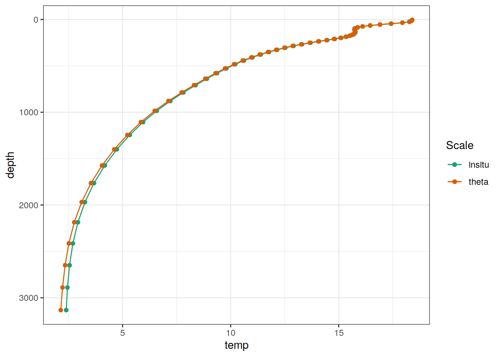
| Version | Author | Date |
|---|---|---|
| 7c12d28 | Donghe-Zhu | 2020-12-18 |
# unit transfer from mol/m3 to µmol/kg
cmorized_climatology <- cmorized_climatology %>%
mutate(
rho = gsw_pot_rho_t_exact(
SA = sal,
t = temp,
p = depth,
p_ref = 10.1325
),
tco2 = tco2 * (1000000 / rho),
talk = talk * (1000000 / rho),
oxygen = oxygen * (1000000 / rho),
nitrate = nitrate * (1000000 / rho),
phosphate = phosphate * (1000000 / rho),
silicate = silicate * (1000000 / rho)
)cmorized_climatology <- cmorized_climatology %>%
mutate(
oxygen_sat_m3 = gas_satconc(
S = sal,
t = temp,
P = 1.013253,
species = "O2"
),
oxygen_sat_kg = oxygen_sat_m3 * (1000 / rho),
AOU = oxygen_sat_kg - oxygen
) %>%
select(-oxygen_sat_kg,-oxygen_sat_m3)Neutral density gamma was calculated with a Python script provided by Serazin et al (2011), which performs a polynomial approximation of the original gamma calculation.
# calculate pressure from depth
cmorized_climatology <- cmorized_climatology %>%
mutate(CTDPRS = gsw_p_from_z(-depth,
lat))
# rename variables according to python script
cmorized_climatology_gamma_prep <- cmorized_climatology %>%
rename(LATITUDE = lat,
LONGITUDE = lon,
SALNTY = sal)
# load python scripts
source_python(paste(
path_functions,
"python_scripts/Gamma_GLODAP_python.py",
sep = ""
))
# calculate gamma
cmorized_climatology_gamma_calc <-
calculate_gamma(cmorized_climatology_gamma_prep)
# reverse variable naming
cmorized_climatology <- cmorized_climatology_gamma_calc %>%
select(-c(CTDPRS, THETA)) %>%
rename(
lat = LATITUDE,
lon = LONGITUDE,
sal = SALNTY,
gamma = GAMMA
)
cmorized_climatology <- as_tibble(cmorized_climatology)
rm(cmorized_climatology_gamma_calc, cmorized_climatology_gamma_prep)cmorized_climatology %>%
write_csv(paste(path_preprocessing,
"cmorized_climatology.csv",
sep = ""))Below, following subsets of the climatology are plotted for all relevant parameters:
p_map_climatology(
df = cmorized_climatology,
var = "temp")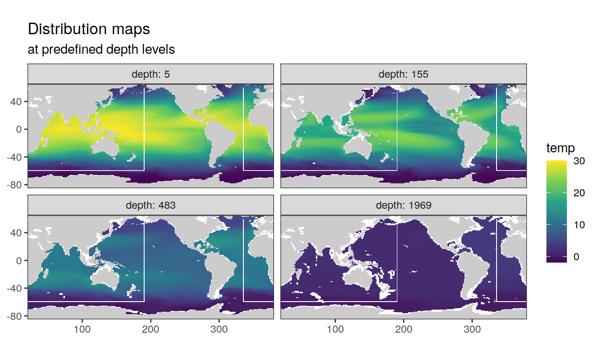
| Version | Author | Date |
|---|---|---|
| 7c12d28 | Donghe-Zhu | 2020-12-18 |
p_section_global(
df = cmorized_climatology,
var = "temp")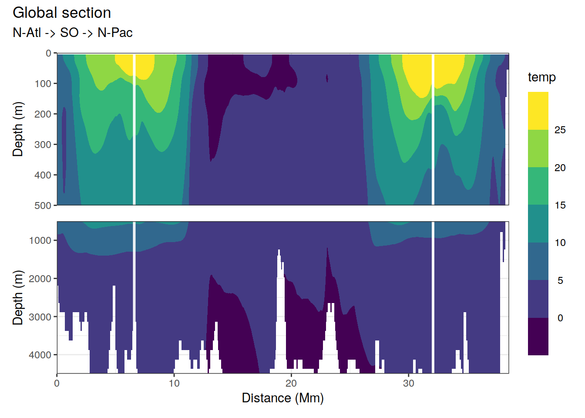
| Version | Author | Date |
|---|---|---|
| 7c12d28 | Donghe-Zhu | 2020-12-18 |
p_map_climatology(
df = cmorized_climatology,
var = "sal")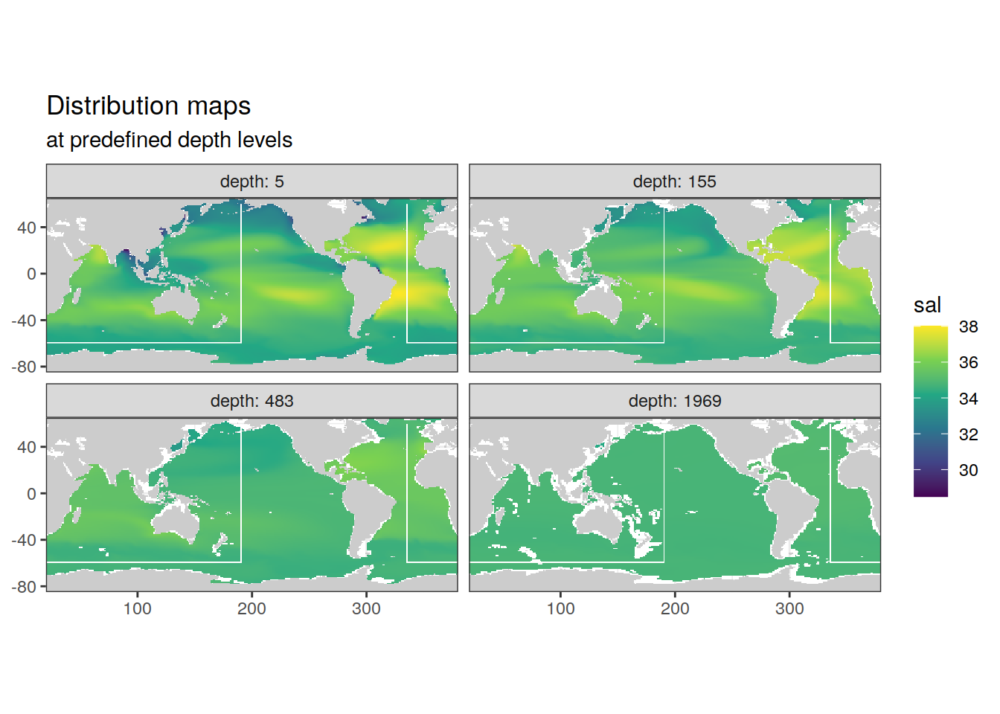
| Version | Author | Date |
|---|---|---|
| 7c12d28 | Donghe-Zhu | 2020-12-18 |
p_section_global(
df = cmorized_climatology,
var = "sal")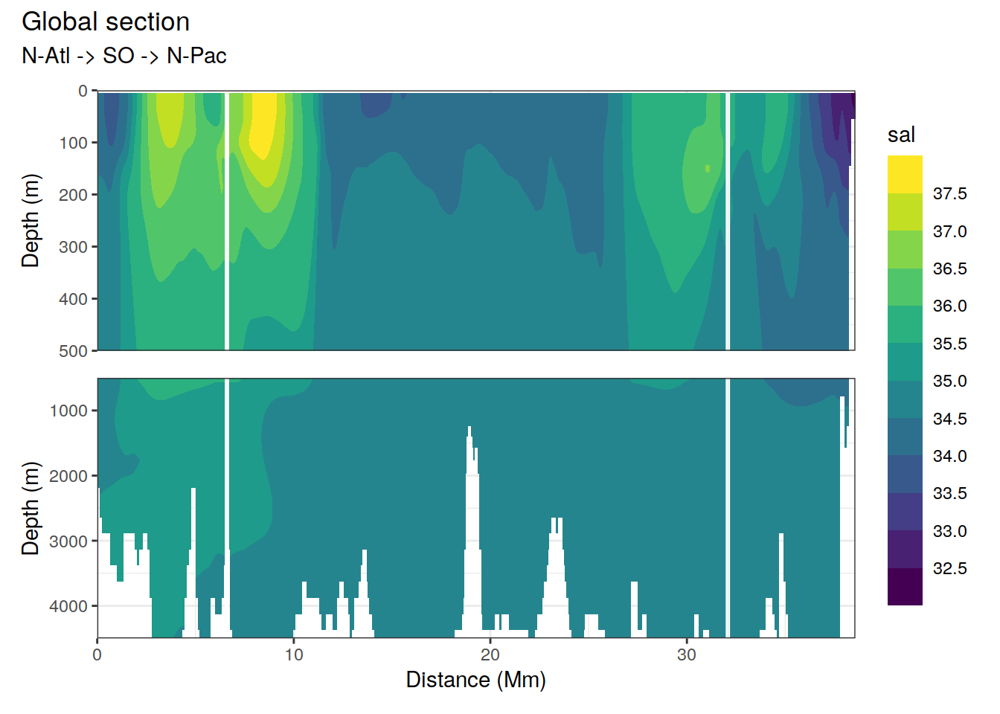
| Version | Author | Date |
|---|---|---|
| 7c12d28 | Donghe-Zhu | 2020-12-18 |
p_map_climatology(
df = cmorized_climatology,
var = "nitrate")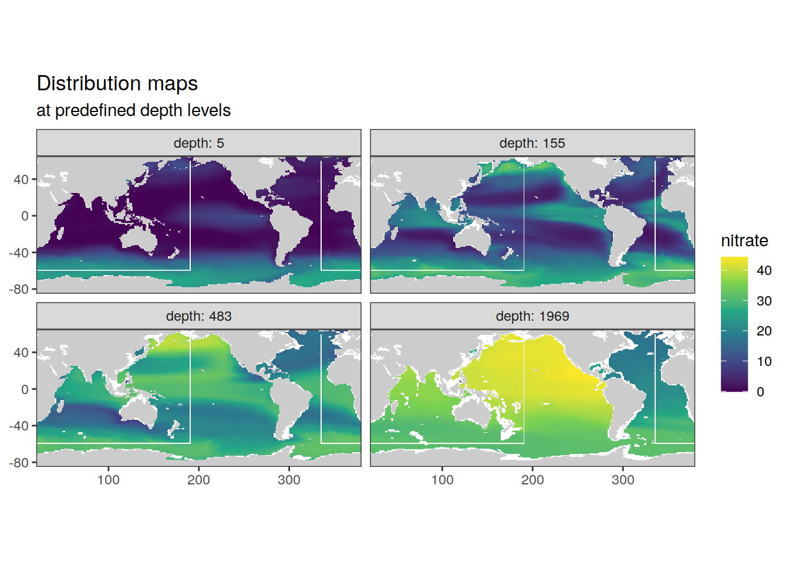
| Version | Author | Date |
|---|---|---|
| 7c12d28 | Donghe-Zhu | 2020-12-18 |
p_section_global(
df = cmorized_climatology,
var = "nitrate")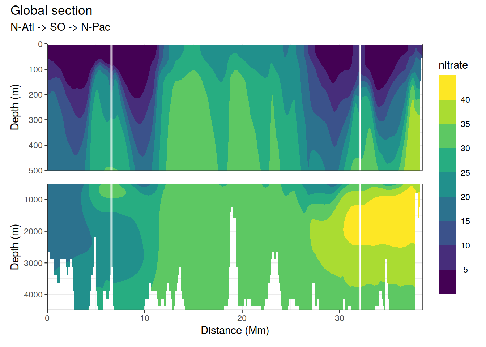
| Version | Author | Date |
|---|---|---|
| 7c12d28 | Donghe-Zhu | 2020-12-18 |
p_map_climatology(
df = cmorized_climatology,
var = "phosphate")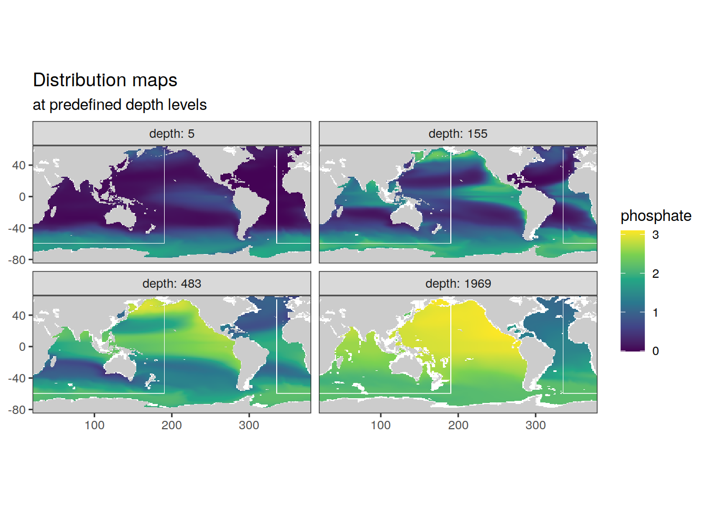
| Version | Author | Date |
|---|---|---|
| 7c12d28 | Donghe-Zhu | 2020-12-18 |
p_section_global(
df = cmorized_climatology,
var = "phosphate")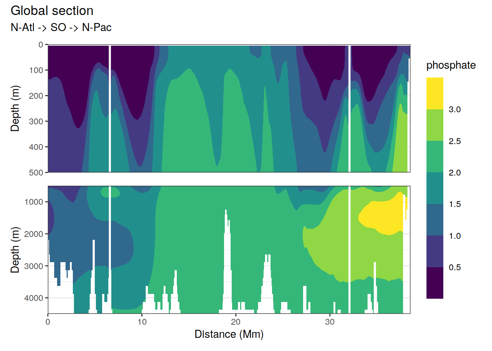
| Version | Author | Date |
|---|---|---|
| 7c12d28 | Donghe-Zhu | 2020-12-18 |
p_map_climatology(
df = cmorized_climatology,
var = "silicate")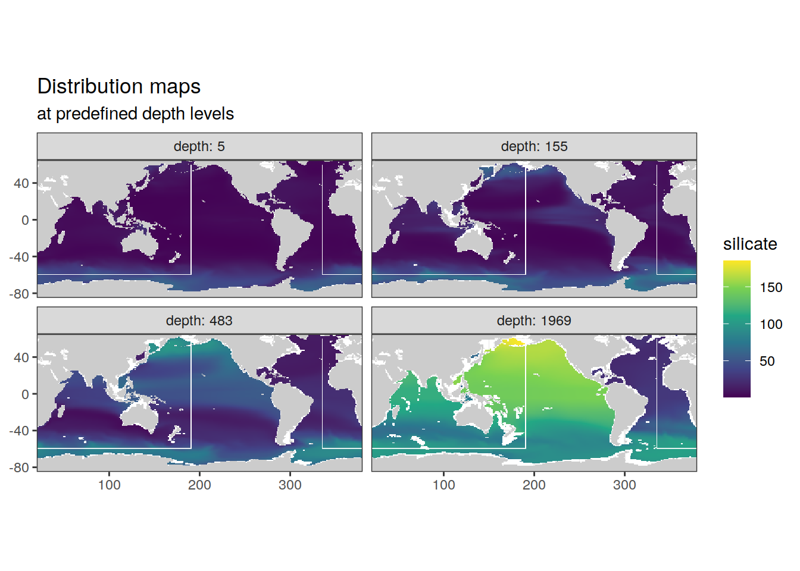
| Version | Author | Date |
|---|---|---|
| 7c12d28 | Donghe-Zhu | 2020-12-18 |
p_section_global(
df = cmorized_climatology,
var = "silicate")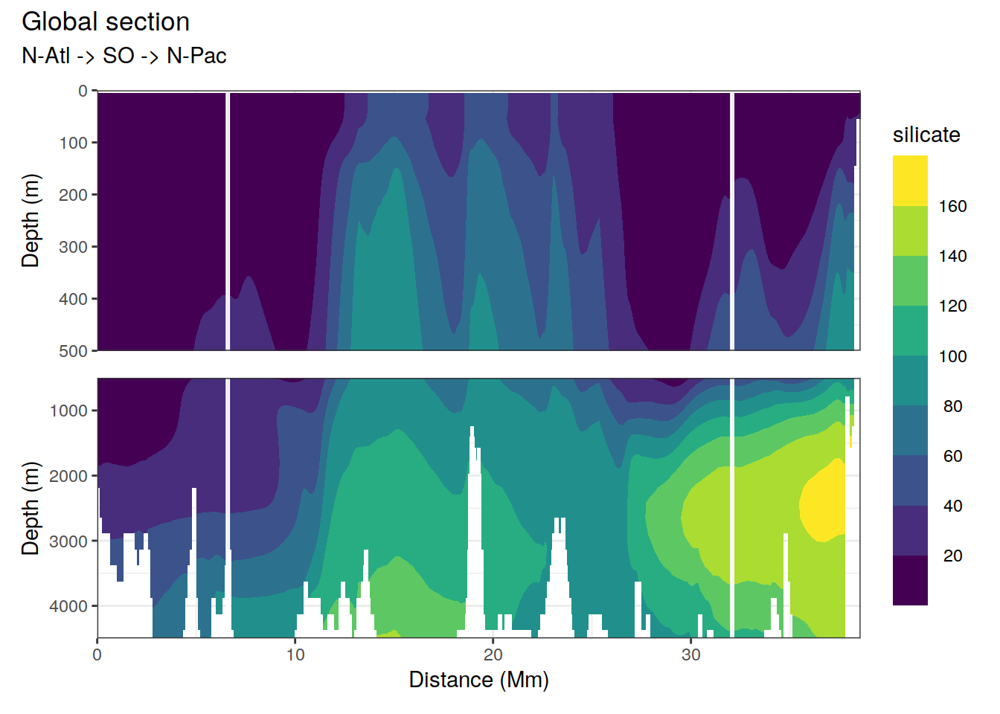
| Version | Author | Date |
|---|---|---|
| 7c12d28 | Donghe-Zhu | 2020-12-18 |
p_map_climatology(
df = cmorized_climatology,
var = "oxygen")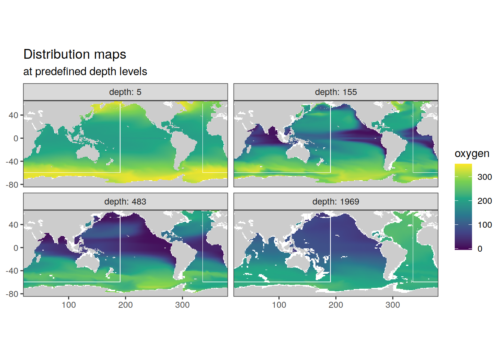
| Version | Author | Date |
|---|---|---|
| 7c12d28 | Donghe-Zhu | 2020-12-18 |
p_section_global(
df = cmorized_climatology,
var = "oxygen")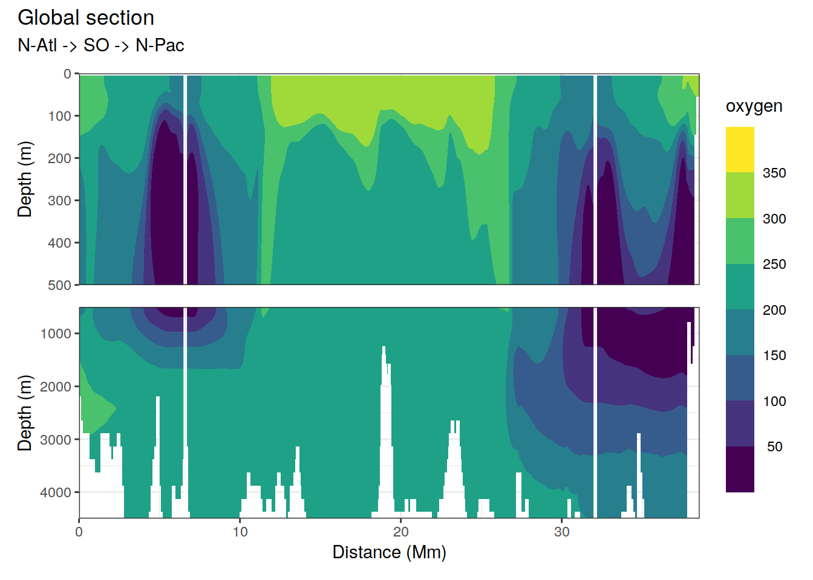
| Version | Author | Date |
|---|---|---|
| 7c12d28 | Donghe-Zhu | 2020-12-18 |
p_map_climatology(
df = cmorized_climatology,
var = "AOU")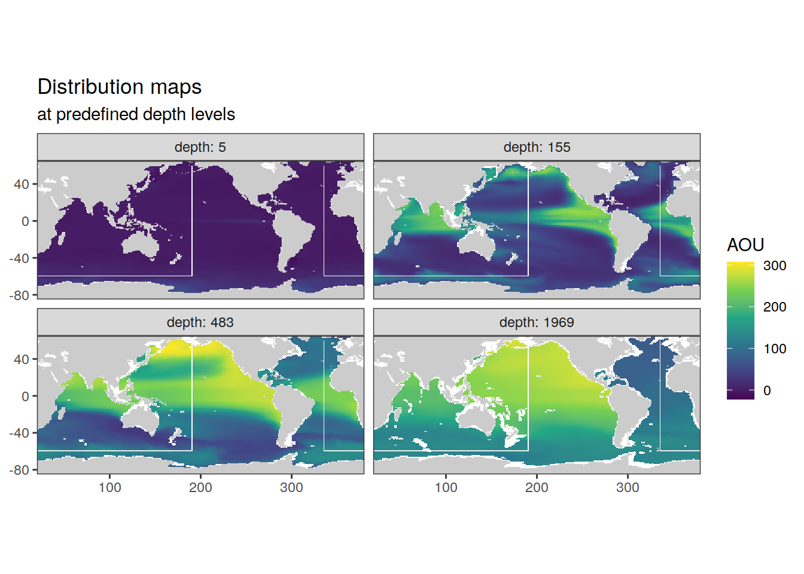
| Version | Author | Date |
|---|---|---|
| 7c12d28 | Donghe-Zhu | 2020-12-18 |
p_section_global(
df = cmorized_climatology,
var = "AOU")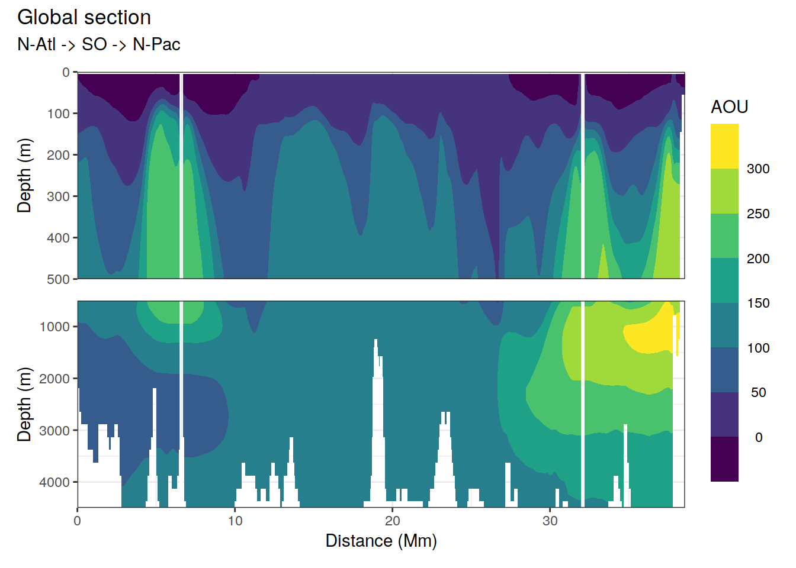
| Version | Author | Date |
|---|---|---|
| 7c12d28 | Donghe-Zhu | 2020-12-18 |
sessionInfo()R version 4.0.3 (2020-10-10)
Platform: x86_64-pc-linux-gnu (64-bit)
Running under: openSUSE Leap 15.1
Matrix products: default
BLAS: /usr/local/R-4.0.3/lib64/R/lib/libRblas.so
LAPACK: /usr/local/R-4.0.3/lib64/R/lib/libRlapack.so
locale:
[1] LC_CTYPE=en_US.UTF-8 LC_NUMERIC=C
[3] LC_TIME=en_US.UTF-8 LC_COLLATE=en_US.UTF-8
[5] LC_MONETARY=en_US.UTF-8 LC_MESSAGES=en_US.UTF-8
[7] LC_PAPER=en_US.UTF-8 LC_NAME=C
[9] LC_ADDRESS=C LC_TELEPHONE=C
[11] LC_MEASUREMENT=en_US.UTF-8 LC_IDENTIFICATION=C
attached base packages:
[1] stats graphics grDevices utils datasets methods base
other attached packages:
[1] marelac_2.1.10 shape_1.4.5 geosphere_1.5-10 oce_1.2-0
[5] gsw_1.0-5 testthat_2.3.2 reticulate_1.18 tidync_0.2.4
[9] metR_0.8.0 scico_1.2.0 patchwork_1.1.0 collapse_1.4.2
[13] forcats_0.5.0 stringr_1.4.0 dplyr_1.0.2 purrr_0.3.4
[17] readr_1.4.0 tidyr_1.1.2 tibble_3.0.4 ggplot2_3.3.2
[21] tidyverse_1.3.0 workflowr_1.6.2
loaded via a namespace (and not attached):
[1] fs_1.5.0 lubridate_1.7.9 RColorBrewer_1.1-2
[4] httr_1.4.2 rprojroot_1.3-2 tools_4.0.3
[7] backports_1.1.10 R6_2.5.0 DBI_1.1.0
[10] colorspace_1.4-1 withr_2.3.0 sp_1.4-4
[13] tidyselect_1.1.0 compiler_4.0.3 git2r_0.27.1
[16] cli_2.1.0 rvest_0.3.6 RNetCDF_2.4-2
[19] xml2_1.3.2 isoband_0.2.2 labeling_0.4.2
[22] scales_1.1.1 checkmate_2.0.0 rappdirs_0.3.1
[25] digest_0.6.27 rmarkdown_2.5 pkgconfig_2.0.3
[28] htmltools_0.5.0 dbplyr_1.4.4 rlang_0.4.8
[31] readxl_1.3.1 rstudioapi_0.11 farver_2.0.3
[34] generics_0.0.2 jsonlite_1.7.1 magrittr_1.5
[37] ncmeta_0.3.0 Matrix_1.2-18 Rcpp_1.0.5
[40] munsell_0.5.0 fansi_0.4.1 lifecycle_0.2.0
[43] stringi_1.5.3 whisker_0.4 yaml_2.2.1
[46] grid_4.0.3 blob_1.2.1 parallel_4.0.3
[49] promises_1.1.1 crayon_1.3.4 lattice_0.20-41
[52] haven_2.3.1 hms_0.5.3 seacarb_3.2.14
[55] knitr_1.30 pillar_1.4.6 reprex_0.3.0
[58] glue_1.4.2 evaluate_0.14 RcppArmadillo_0.10.1.0.0
[61] data.table_1.13.2 modelr_0.1.8 vctrs_0.3.4
[64] httpuv_1.5.4 cellranger_1.1.0 gtable_0.3.0
[67] assertthat_0.2.1 xfun_0.18 broom_0.7.2
[70] RcppEigen_0.3.3.7.0 later_1.1.0.1 viridisLite_0.3.0
[73] ncdf4_1.17 ellipsis_0.3.1